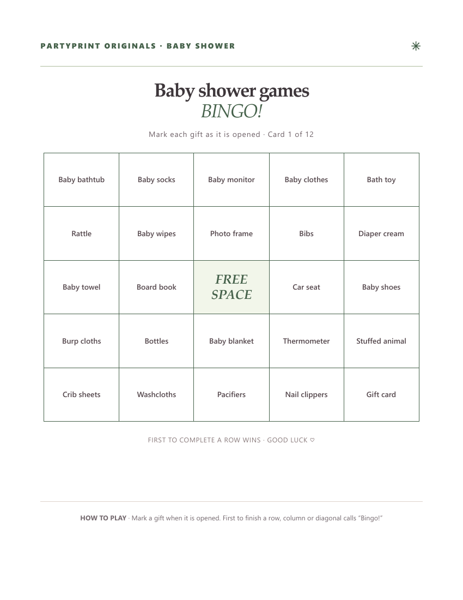

Gift-opening bingo: play along with the presents
Choose Gift opening for cards filled with baby gifts: diapers, baby wipes, onesies, bottles, pacifiers and blankets. Hand out cards before the presents are opened. Guests mark a square when that gift appears; repeated gifts do not create extra marks. The center of a 5 × 5 card is free.
Agree on matches before starting: for example, any baby blanket counts as “Baby blanket,” regardless of its color. A gift bundle may fill several different squares. The first guest with a complete row, column or diagonal calls “Bingo!” If nobody completes a line before the last present, celebrate the guest with the most marked squares or keep playing for fun.


A starter list of 24 baby gifts
Use these as a starting point, then check what the parents actually expect to receive. Include gifts from their registry and avoid items that do not fit their plans.
- Diapers
- Baby wipes
- Onesies
- Baby blanket
- Bottles
- Pacifiers
- Bibs
- Burp cloths
- Baby socks
- Baby hat
- Sleep sack
- Swaddle
- Board book
- Stuffed animal
- Teething toy
- Rattle
- Play mat
- Baby towel
- Washcloths
- Baby shampoo
- Baby lotion
- Diaper cream
- Diaper bag
- Changing pad
A 5 × 5 card uses 24 gift words plus the free center. With exactly 24 words, everyone has the same gifts in different positions. Add more than 24 to vary which gifts appear on each card; keep enough likely gifts that a winning line is possible.
Tailor the gift list to your shower
Open “Customize the bingo word list,” then choose “Start with the curated list.” Remove gifts that do not fit the registry and add alternatives. Keep at least 24 unique items for 5 × 5 or 16 for 4 × 4. A larger pool gives guests more variety. Choose “Use only my word list” if you want your list to replace the suggestions entirely; otherwise your words supplement them. “Mix it up” rearranges cards without losing your edits.
Make my free gift bingo cards ↗
Party-moment bingo: play throughout the celebration
Choose Party moments when gifts will not be opened at the shower. In this version, every square describes something they might hear or see at the shower: a funny story, someone sharing advice, a guest taking a photo, or a mention of tiny socks. That means the game can run quietly alongside snacks, conversation and gift opening.
- Choose Baby shower in the generator and enter a title for your event.
- Choose Party moments, then select a 4 × 4 grid for a shorter game or a 5 × 5 grid for a longer one.
- Set the number of cards to match your guests and print one per person.
- Ask everyone to mark squares as the moments happen naturally.
- The first person to complete a horizontal, vertical or diagonal line calls out “Bingo!”
Let guests know that squares are observations, not tasks. There's no need to interrupt the guest of honor or manufacture a moment just to complete the game.
How many cards should you print?
Print one for every adult guest who wants to play, plus two or three extras for last-minute arrivals. The generator creates differently arranged bingo grids and supports up to 48 cards. For a smaller shower, a 4 × 4 grid makes a speedy round; the classic 5 × 5 version includes a free center square and usually takes longer.
Simple prize ideas
- A small plant or fresh flowers.
- A wrapped chocolate bar or locally made treat.
- A coffee-shop gift card.
- First pick from a bowl of small party favors.
One prize is plenty. You can also skip prizes altogether and play just for fun. If your group is large, consider offering a second prize for the first full-card completion so play continues after the first winner.
Make it feel personal
Use the custom-word box to add family-friendly details: a grandparent's favorite saying, a favorite snack, or a running joke everyone will recognize. Add only details your guests would be happy to see shared on a printed card. The cards are generated in your browser, so there's no account to create.
Baby shower bingo questions
Can I save the cards as a PDF?
Yes. Choose Letter or A4 and tap “Download PDF.” On a computer, tap “Save PDF.” On iPhone or iPad, tap “Save to Files,” then choose Save to Files in the iPhone share sheet. “Share PDF” opens the same menu so you can send the document instead. If sharing is unavailable, use “Open PDF to save” and the PDF viewer’s Share menu. Each bingo card occupies one page. Before printing a large pack, open the PDF, check the page count and print one test card. Match the printer paper setting to Letter or A4; select grayscale to use less color ink. “Print games” remains available for browser printing.
Can guests play on their phones instead?
Yes, or you can stay with paper and pens. Make your kit, open “Play on phones · Share with guests,” and choose “Create guest link & QR.” Send the link or display the QR code for guests to scan. Each browser gets a shuffled bingo card; guests tap squares as gifts appear and show the host their completed line.
There is no live room or shared scoreboard. Progress stays in each guest’s browser. If you change the kit, create a fresh link. The guest link includes your party title and custom game text, so share it only with your intended guests; photos and host answers are excluded.
What if no one gets bingo, or two guests win together?
Before opening gifts, agree whether the first line wins or several people can win. For a tie, award both guests a small prize or draw one winner at random. If gifts run out before anyone completes a line, the guest with the most marked gift squares wins; do not count the free center in that tally.
Our free creator builds matching printable bingo, trivia and scavenger hunt sheets for your event.
Make a coordinated keepsake table
Pair your bingo with our free baby-shower sample collection: predictions, encouragement cards, a gift record and a baby-name activity in Letter and A4.
Choose your free cards or a coordinated kit
The free generator gives you custom wording, four color themes, up to 48 cards and phone play. For a ready-designed table, try three free Wildflower sample pages: one gift-bingo card, a baby animal matching activity and its host answer key.
The optional Wildflower premium kit costs US$5 once, plus applicable tax. It includes 24 gift-bingo cards, activities, keepsakes and signs, in four 37-page PDF editions: Letter and A4, each in color or ink-friendly black and white. These are fixed-wording files with personal-use permission; they do not unlock extra generator features. See the actual previews and free sample before deciding.